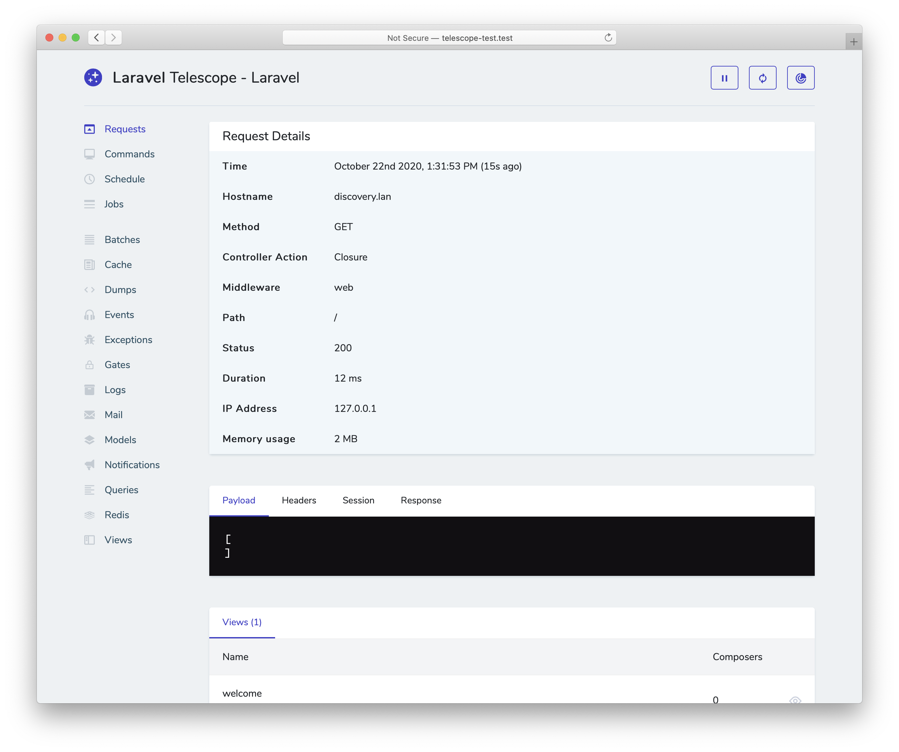

Laravel Telescope
- Introduction
- Installation
- Upgrading Telescope
- Filtering
- Tagging
- Available Watchers
- Displaying User Avatars
Introduction
Telescope makes a wonderful companion to your local Laravel development environment. Telescope provides insight into the requests coming into your application, exceptions, log entries, database queries, queued jobs, mail, notifications, cache operations, scheduled tasks, variable dumps, and more.
Installation
You may use the Composer package manager to install Telescope into your Laravel project:
composer require laravel/telescopeAfter installing Telescope, publish its assets using the telescope:install Artisan command. After installing Telescope, you should also run the migrate command in order to create the tables needed to store Telescope's data:
php artisan telescope:install
php artisan migrateMigration Customization
If you are not going to use Telescope's default migrations, you should call the Telescope::ignoreMigrations method in the register method of your application's App\Providers\AppServiceProvider class. You may export the default migrations using the following command: php artisan vendor:publish --tag=telescope-migrations
Local Only Installation
If you plan to only use Telescope to assist your local development, you may install Telescope using the --dev flag:
composer require laravel/telescope --dev
php artisan telescope:install
php artisan migrateAfter running telescope:install, you should remove the TelescopeServiceProvider service provider registration from your application's config/app.php configuration file. Instead, manually register Telescope's service providers in the register method of your App\Providers\AppServiceProvider class. We will ensure the current environment is local before registering the providers:
/**
* Register any application services.
*
* @return void
*/
public function register()
{
if ($this->app->environment('local')) {
$this->app->register(\Laravel\Telescope\TelescopeServiceProvider::class);
$this->app->register(TelescopeServiceProvider::class);
}
}Finally, you should also prevent the Telescope package from being auto-discovered by adding the following to your composer.json file:
"extra": {
"laravel": {
"dont-discover": [
"laravel/telescope"
]
}
},Configuration
After publishing Telescope's assets, its primary configuration file will be located at config/telescope.php. This configuration file allows you to configure your watcher options. Each configuration option includes a description of its purpose, so be sure to thoroughly explore this file.
If desired, you may disable Telescope's data collection entirely using the enabled configuration option:
'enabled' => env('TELESCOPE_ENABLED', true),Data Pruning
Without pruning, the telescope_entries table can accumulate records very quickly. To mitigate this, you should schedule the telescope:prune Artisan command to run daily:
$schedule->command('telescope:prune')->daily();By default, all entries older than 24 hours will be pruned. You may use the hours option when calling the command to determine how long to retain Telescope data. For example, the following command will delete all records created over 48 hours ago:
$schedule->command('telescope:prune --hours=48')->daily();Dashboard Authorization
The Telescope dashboard may be accessed at the /telescope route. By default, you will only be able to access this dashboard in the local environment. Within your app/Providers/TelescopeServiceProvider.php file, there is an authorization gate definition. This authorization gate controls access to Telescope in non-local environments. You are free to modify this gate as needed to restrict access to your Telescope installation:
/**
* Register the Telescope gate.
*
* This gate determines who can access Telescope in non-local environments.
*
* @return void
*/
protected function gate()
{
Gate::define('viewTelescope', function ($user) {
return in_array($user->email, [
'taylor@laravel.com',
]);
});
}{note} You should ensure you change your
APP_ENVenvironment variable toproductionin your production environment. Otherwise, your Telescope installation will be publicly available.
Upgrading Telescope
When upgrading to a new major version of Telescope, it's important that you carefully review the upgrade guide.
In addition, when upgrading to any new Telescope version, you should re-publish Telescope's assets:
php artisan telescope:publishTo keep the assets up-to-date and avoid issues in future updates, you may add the telescope:publish command to the post-update-cmd scripts in your application's composer.json file:
{
"scripts": {
"post-update-cmd": [
"@php artisan telescope:publish --ansi"
]
}
}Filtering
Entries
You may filter the data that is recorded by Telescope via the filter closure that is defined in your App\Providers\TelescopeServiceProvider class. By default, this closure records all data in the local environment and exceptions, failed jobs, scheduled tasks, and data with monitored tags in all other environments:
use Laravel\Telescope\IncomingEntry;
use Laravel\Telescope\Telescope;
/**
* Register any application services.
*
* @return void
*/
public function register()
{
$this->hideSensitiveRequestDetails();
Telescope::filter(function (IncomingEntry $entry) {
if ($this->app->environment('local')) {
return true;
}
return $entry->isReportableException() ||
$entry->isFailedJob() ||
$entry->isScheduledTask() ||
$entry->isSlowQuery() ||
$entry->hasMonitoredTag();
});
}Batches
While the filter closure filters data for individual entries, you may use the filterBatch method to register a closure that filters all data for a given request or console command. If the closure returns true, all of the entries are recorded by Telescope:
use Illuminate\Support\Collection;
use Laravel\Telescope\Telescope;
/**
* Register any application services.
*
* @return void
*/
public function register()
{
$this->hideSensitiveRequestDetails();
Telescope::filterBatch(function (Collection $entries) {
if ($this->app->environment('local')) {
return true;
}
return $entries->contains(function ($entry) {
return $entry->isReportableException() ||
$entry->isFailedJob() ||
$entry->isScheduledTask() ||
$entry->isSlowQuery() ||
$entry->hasMonitoredTag();
});
});
}Tagging
Telescope allows you to search entries by "tag". Often, tags are Eloquent model class names or authenticated user IDs which Telescope automatically adds to entries. Occasionally, you may want to attach your own custom tags to entries. To accomplish this, you may use the Telescope::tag method. The tag method accepts a closure which should return an array of tags. The tags returned by the closure will be merged with any tags Telescope would automatically attach to the entry. Typically, you should call the tag method within the register method of your App\Providers\TelescopeServiceProvider class:
use Laravel\Telescope\IncomingEntry;
use Laravel\Telescope\Telescope;
/**
* Register any application services.
*
* @return void
*/
public function register()
{
$this->hideSensitiveRequestDetails();
Telescope::tag(function (IncomingEntry $entry) {
return $entry->type === 'request'
? ['status:'.$entry->content['response_status']]
: [];
});
}Available Watchers
Telescope "watchers" gather application data when a request or console command is executed. You may customize the list of watchers that you would like to enable within your config/telescope.php configuration file:
'watchers' => [
Watchers\CacheWatcher::class => true,
Watchers\CommandWatcher::class => true,
...
],Some watchers also allow you to provide additional customization options:
'watchers' => [
Watchers\QueryWatcher::class => [
'enabled' => env('TELESCOPE_QUERY_WATCHER', true),
'slow' => 100,
],
...
],Batch Watcher
The batch watcher records information about queued batches, including the job and connection information.
Cache Watcher
The cache watcher records data when a cache key is hit, missed, updated and forgotten.
Command Watcher
The command watcher records the arguments, options, exit code, and output whenever an Artisan command is executed. If you would like to exclude certain commands from being recorded by the watcher, you may specify the command in the ignore option within your config/telescope.php file:
'watchers' => [
Watchers\CommandWatcher::class => [
'enabled' => env('TELESCOPE_COMMAND_WATCHER', true),
'ignore' => ['key:generate'],
],
...
],Dump Watcher
The dump watcher records and displays your variable dumps in Telescope. When using Laravel, variables may be dumped using the global dump function. The dump watcher tab must be open in a browser for the dump to be recorded, otherwise, the dumps will be ignored by the watcher.
Event Watcher
The event watcher records the payload, listeners, and broadcast data for any events dispatched by your application. The Laravel framework's internal events are ignored by the Event watcher.
Exception Watcher
The exception watcher records the data and stack trace for any reportable exceptions that are thrown by your application.
Gate Watcher
The gate watcher records the data and result of gate and policy checks by your application. If you would like to exclude certain abilities from being recorded by the watcher, you may specify those in the ignore_abilities option in your config/telescope.php file:
'watchers' => [
Watchers\GateWatcher::class => [
'enabled' => env('TELESCOPE_GATE_WATCHER', true),
'ignore_abilities' => ['viewNova'],
],
...
],HTTP Client Watcher
The HTTP client watcher records outgoing HTTP client requests made by your application.
Job Watcher
The job watcher records the data and status of any jobs dispatched by your application.
Log Watcher
The log watcher records the log data for any logs written by your application.
Mail Watcher
The mail watcher allows you to view an in-browser preview of emails sent by your application along with their associated data. You may also download the email as an .eml file.
Model Watcher
The model watcher records model changes whenever an Eloquent model event is dispatched. You may specify which model events should be recorded via the watcher's events option:
'watchers' => [
Watchers\ModelWatcher::class => [
'enabled' => env('TELESCOPE_MODEL_WATCHER', true),
'events' => ['eloquent.created*', 'eloquent.updated*'],
],
...
],If you would like to record the number of models hydrated during a given request, enable the hydrations option:
'watchers' => [
Watchers\ModelWatcher::class => [
'enabled' => env('TELESCOPE_MODEL_WATCHER', true),
'events' => ['eloquent.created*', 'eloquent.updated*'],
'hydrations' => true,
],
...
],Notification Watcher
The notification watcher records all notifications sent by your application. If the notification triggers an email and you have the mail watcher enabled, the email will also be available for preview on the mail watcher screen.
Query Watcher
The query watcher records the raw SQL, bindings, and execution time for all queries that are executed by your application. The watcher also tags any queries slower than 100 milliseconds as slow. You may customize the slow query threshold using the watcher's slow option:
'watchers' => [
Watchers\QueryWatcher::class => [
'enabled' => env('TELESCOPE_QUERY_WATCHER', true),
'slow' => 50,
],
...
],Redis Watcher
The Redis watcher records all Redis commands executed by your application. If you are using Redis for caching, cache commands will also be recorded by the Redis watcher.
Request Watcher
The request watcher records the request, headers, session, and response data associated with any requests handled by the application. You may limit your recorded response data via the size_limit (in kilobytes) option:
'watchers' => [
Watchers\RequestWatcher::class => [
'enabled' => env('TELESCOPE_REQUEST_WATCHER', true),
'size_limit' => env('TELESCOPE_RESPONSE_SIZE_LIMIT', 64),
],
...
],Schedule Watcher
The schedule watcher records the command and output of any scheduled tasks run by your application.
View Watcher
The view watcher records the view name, path, data, and "composers" used when rendering views.
Displaying User Avatars
The Telescope dashboard displays the user avatar for the user that was authenticated when a given entry was saved. By default, Telescope will retrieve avatars using the Gravatar web service. However, you may customize the avatar URL by registering a callback in your App\Providers\TelescopeServiceProvider class. The callback will receive the user's ID and email address and should return the user's avatar image URL:
use App\Models\User;
use Laravel\Telescope\Telescope;
/**
* Register any application services.
*
* @return void
*/
public function register()
{
// ...
Telescope::avatar(function ($id, $email) {
return '/avatars/'.User::find($id)->avatar_path;
});
}